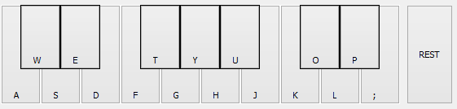

When the piano composer is first opened, the recording is empty. To add notes, either click or press keys corresponding to the virtual piano. The piano notes to keys are as follows:
| Note | Hotkey |
|---|---|
| C | A |
| C# | W |
| D | S |
| D# | E |
| E | D |
| F | F |
| F# | T |
| G | G |
| G# | Y |
| A | H |
| A# | U |
| B | J |
| C | K |
| C# | O |
| D | L |
| D# | P |
| E | Semi-colon |
| REST | Forward Slash |
Pressing Equals (=) or Minus (-) will allow you to move the available octaves up and down respectively. You can also use the transposer slider.
Sound Location Output allows you to choose how you want jBricks to play the note(s) back to you. If you select Java Output the output will come from your computer. If you select NXT Output and the NXT brick is hooked up through USB, the NXT brick will produce output.
Current notes shows all the notes played in the session and ready for use. The available actions are under edit controls and are listed below:
Play - Plays all the notes in the current notes section
Save - Saves all the notes to a nxc file that can be downloaded to the robot
Copy - Copies the notes so that you can place it in your own nxc file
Help - Brings up this help menu
Undo - Removes the last in the Current notes section
Clear - Clears all the notes in the Current notes section
The Length section allows you to change the duration of each note. Default is 1/4 (Quarter note). Custom Note/Rest Time allows you to place your own.